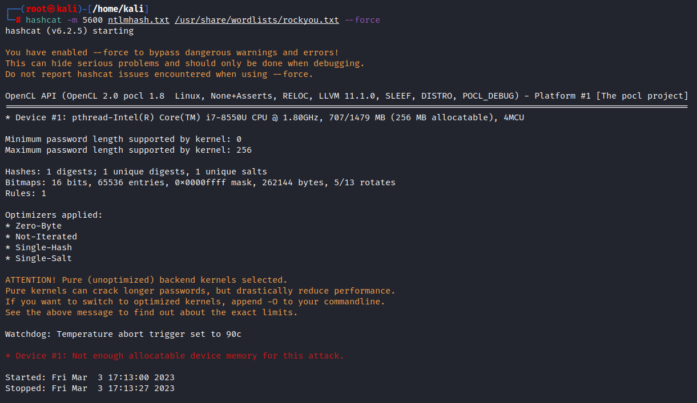

gedit the hashes in the txt file (i.e. ntlmhash.txt)
run the command to see what 5600 is
hashcat --help | grep NTLM
┌──(root㉿kali)-[/home/kali]
└─# hashcat -m 5600 ntlmhash.txt /usr/share/wordlists/rockyou.txt --force
rockyou.txt is the default wordlist that comes but there are lot of wordlist that we can choose from:
https://github.com/danielmiessler/SecLists
It's probably that our company will have there own work list as well but when we are doing stuff like HACK THE BOX or Capture the FLAGS
rockyou is plenty sufficient and we don't have to go above and beyond that.
Download the hashcat binaries (i.e. https://hashcat.net/hashcat/)
Move the rockyou.txt file from LINUX to WINDOWS using the drag option.
put the hash into a txt file and paste in the hashcat folder so that we have all the things that we need.
In my case my GPU is not being used and it is using the my INTEL graphic and not GPU and CPU.

C:\Windows\System32>cd c:\Users\pabla\Downloads\hashcat-6.2.6
Command :
c:\Users\pabla\Downloads\hashcat-6.2.6>hashcat.exe -m 5600 hashes4.txt rockyou.txt -O
or
c:\Users\pabla\Downloads\hashcat-6.2.6>hashcat.exe -d 2 -m 5600 hashes4.txt rockyou.txt -O


https://security.stackexchange.com/questions/258038/hashcat-skipping-gpu-even-if-its-recognizing-the-device-and-the-driver-is-insta